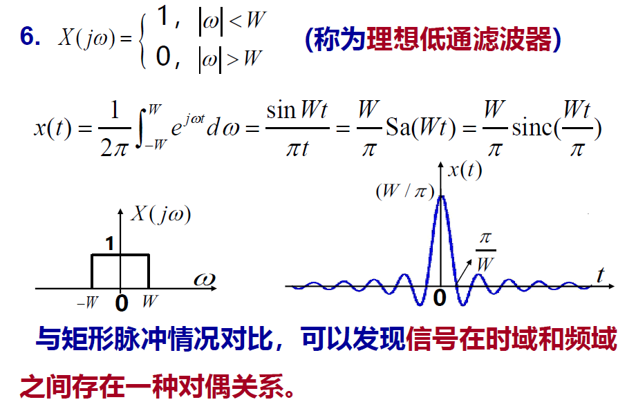
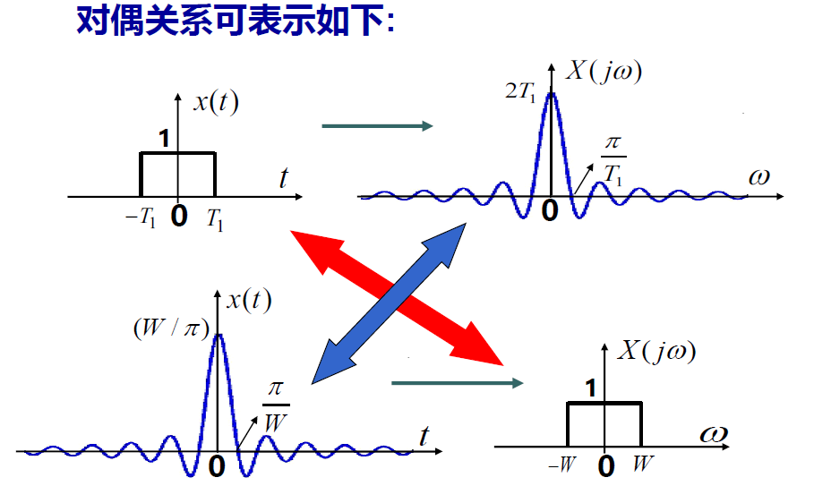

4.连续时间傅里叶变换
4.1 非周期信号的表示（连续时间傅里叶变换）
4.1.1 连续时间傅里叶变换
连续时间傅里叶变换：\(X(j\omega)=\int_{-\infty}^{\infty}x(t)e^{-j\omega t}dt\)
- 与傅里叶级数的关系：\(a_k=\frac{1}{T_0}X(jk\omega_0)\)
- 表明周期信号的频谱是它对应的非周期信号频谱的样本
- \(X(j\omega)=\lim_{T_0\to \infty}T_0a_k=\lim_{f_0\to0}\frac{a_k}{f_0}\)，具有频谱随频率分布的物理含义，因而\(X(j\omega)\)称为频谱密度函数
傅里叶反变换：\(x(t)=\frac{1}{2\pi}\int_{-\infty}^{\infty}X(j\omega)e^{j\omega t}d\omega\)
- 表明非周期信号可以分解为无数频率连续分布、振幅为\(\frac{1}{2\pi}X(j\omega)d\omega\)的复指数信号之和
傅里叶变换对：\(\begin{cases}X(j\omega)=\int_{-\infty}^{\infty}x(t)e^{-j\omega t}dt\\x(t)=\frac{1}{2\pi}\int_{-\infty}^{\infty}X(j\omega)e^{j\omega t}d\omega\end{cases}\)
周期信号的频谱是对应的非周期信号的样本，非周期信号的频谱是对应周期信号频谱的包络。
4.1.2 傅里叶变换的收敛
需要满足两组条件【充分条件】：
- 若\(\int_{-\infty}^{\infty}|x(t)|^2dt<\infty\)，则\(X(j\omega)\)存在，即能量有限的信号其傅里叶变换一定存在
- Dirichlet条件：
- \(\int_{-\infty}^{\infty}|x(t)|dt\)，即绝对可积
- 任何有限区间内，\(x(t)\)只能包含有限个极值点，且极值有限
- 任何有限区间内，\(x(t)\)只能包含有限个第一类间断点
4.1.3 常用信号的傅里叶变换



信号在时域和频域之间存在相反的关系：信号在时域脉冲越窄，其频谱主瓣越宽，反之亦然。
4.1.4 信号的带宽
信号的带宽：
- \(|X(j\omega)|\)下降到最大值的\(\frac{1}{\sqrt{2}}\)时对应的频率范围，此时带内信号分量占有信号总能量的\(\frac{1}{2}\)
- 对包络为\(Sa(x)\)形状的频谱，通常定义主瓣宽度（即频谱第一个零点内的范围）为信号带宽
- 矩形脉冲中，脉宽乘带宽等于常数（脉宽带宽积）——频域与时域相反的关系
4.2 周期信号的傅里叶变换
周期信号的傅里叶变换表示：若\(x(t)=\sum_{k=-\infty}^{\infty}a_ke^{jk\omega_0t}\)，则\(X(j\omega)=2\pi\sum_{k=-\infty}^{\infty}a_k\delta(\omega-k\omega_0)\)
- 周期信号的傅里叶变换由一系列冲激组成，每一个冲激分别位于信号的各个谐波的频率处，其冲激强度正比于对应的傅里叶级数的系数\(2\pi a_k\)
4.3 连续时间傅里叶变换的性质
线性：若\(x(t)\longleftrightarrow X(j\omega)，y(t)\longleftrightarrow Y(j\omega)\)，则\(ax(t)+by(t)\longleftrightarrow aX(j\omega)+bY(j\omega)\)
时移：若\(x(t)\longleftrightarrow X(j\omega)\)，则\(x(t-t_0)\longleftrightarrow X(j\omega)e^{-j\omega t_0}\)
- 信号的时移只影响其相频特性，且只会增加一个线性时移
共轭对称性：若\(x(t)\longleftrightarrow X(j\omega)\)，则\(x^*(t)\longleftrightarrow X^*(-j\omega)\)
- 若\(x(t)\)是实信号，则\(X(j\omega)=X^*(-j\omega)\)，即模是偶函数，相位是奇函数
- 若\(x(t)\)是实偶函数，则傅里叶变换为实偶函数
- 若\(x(t)\)是实奇函数，则傅里叶变换为虚奇函数
时域微分与积分：若\(x(t)\longleftrightarrow X(j\omega)\)，则\(\frac{dx(t)}{dt}\longleftrightarrow j\omega X(j\omega),\int_{-\infty}^{t}x(\tau)d\tau\longleftrightarrow \frac{1}{j\omega}X(j\omega)+\pi X(0)\delta(\omega)\)
时域和频域的尺度变换：若\(x(t)\longleftrightarrow X(j\omega)\)，则\(x(at)=\frac{1}{|a|}X(j\frac{\omega}{a})\)
- 信号如果在时域扩展a倍，则带宽压缩a倍
- 时域中的压缩（扩展）对应频域中的扩展（压缩）
对偶性：若\(x(t)\longleftrightarrow X(j\omega)\)，则\(X(jt)\longleftrightarrow2\pi x(-\omega)\)
- 能够将时域的某些特点对偶到频域
移频特性：若\(x(t)\longleftrightarrow X(j\omega)\)，则\(x(t)e^{j\omega_0t}\longleftrightarrow X[j(\omega-\omega_0)]\)
频域微分与积分：若\(x(t)\longleftrightarrow X(j\omega)\)，则\(-jt x(t)\longleftrightarrow \frac{d}{d\omega}X(j\omega),\frac{x(t)}{-jt}+\pi x(0)\delta(t)\longleftrightarrow \int_{-\infty}^{\omega}X(j\tau)d\tau\)
Parseval定理：若\(x(t)\longleftrightarrow X(j\omega)\)，则\(\int_{-\infty}^{\infty}|x(t)|^2dt=\frac{1}{2\pi}\int_{-\infty}^{\infty}|X(j\omega)|^2d\omega\)
- 信号的能量既可以在时域求得，也可以在频域求得
- 由于\(|X(j\omega)|^2\)表示了信号能量在频域的分布，因此也称为能量谱密度函数


4.4 卷积性质
4.4.1 卷积特性
卷积特性：若\(x(t)\longleftrightarrow X(j\omega),h(t)\longleftrightarrow H(j\omega),y(t)=x(t)*h(t)\)，则\(Y(j\omega)=X(j\omega)H(j\omega)\)
- 由于\(h(t)\)的傅里叶变换\(H(j\omega)\)就是频率为\(\omega\)的复指数信号\(e^{j\omega t}\)通过LTI系统时，系统对输入信号在幅度上产生的影响，因此称为系统的频率响应
- 由于\(h(t)\)与\(H(j\omega)\)一一对应，因此\(H(j\omega)\)也能表征LTI系统，但是并非所有系统都存在\(H(j\omega)\)
4.4.2 LTI系统的频域分析法
频域分析的步骤：
- 由\(x(t)\longleftrightarrow X(j\omega)\)
- 根据系统的描述，求出\(H(j\omega)\)
- \(Y(j\omega)=X(j\omega)H(j\omega)\)
- \(y(t)=F^{-1}[Y(j\omega)]\)
4.5 相乘性质
相乘性质：若\(x_1(t)\longleftrightarrow X_1(j\omega),x_2(t)\longleftrightarrow X_2(j\omega)\)，则\(x_1(t)x_2(t)\longleftrightarrow\frac{1}{2\pi}X_1(j\omega)*X_2(j\omega)\)
- 两个信号在时域相乘，可以看作一个信号控制另一个信号的幅度，即幅度调制。其中一个信号称为载波，另一个信号称为调制信号
4.6 由线性常系数微分方程表征的系统
\(\sum_{k=0}^{N}a_k\frac{d^{k}y(t)}{dt^k}=\sum_{k=0}^{M}b_k\frac{d^kx(t)}{dt^k}\)
- 对两边进行傅里叶变换后得到：\(\sum_{k=0}^{N}a_k(j\omega)^kY(j\omega)=\sum_{k=0}^{M}b_k(j\omega)^kX(j\omega)\)
- \(H(j\omega)=\frac{\sum_{k=0}^{M}b_k(j\omega)^k}{\sum_{k=0}^{N}a_k(j\omega)^k}\)
对有理函数求傅里叶反变换通常采用部分式展开和利用常用变换对进行。